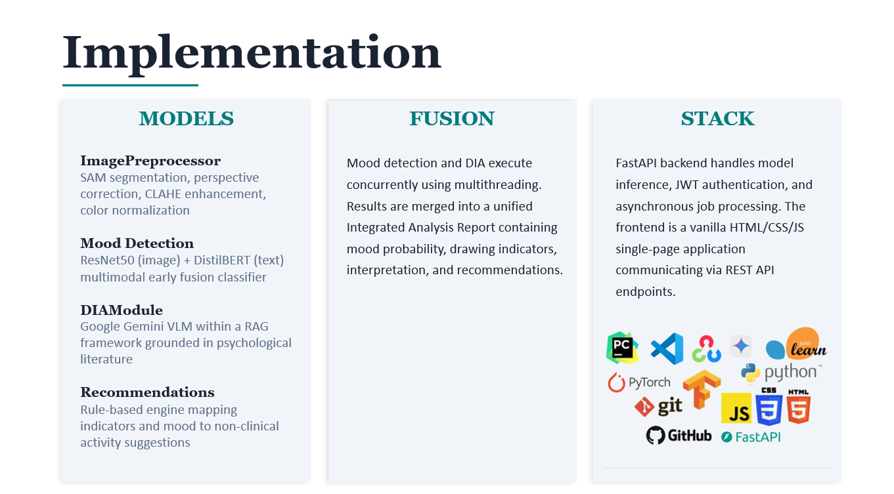

Publications
INKIND: Analysing Psychological and Developmental Markers in Children's Drawings Through Multimodal AI
Presented at iPURSE 2026 Conference



This research explores the use of multimodal Artificial Intelligence to analyze children's drawings for identifying psychological and developmental markers. By integrating computer vision, deep learning, and pattern recognition techniques, the study investigates how visual characteristics in drawings can provide meaningful insights into children's cognitive, emotional, and developmental progress. The research introduces INKIND, an AI-powered web application that enables educators to upload children's drawings and receive automated emotion predictions, supporting early identification of emotional patterns through a non-invasive assessment approach.
Research Areas: Artificial Intelligence, Deep Learning, Computer Vision, Multimodal AI, Emotion Recognition, Educational Technology
Technologies: Python, Streamlit, TensorFlow/Keras, OpenCV, Scikit-learn, Computer Vision, Deep Learning